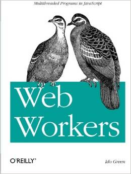

Weather 4 Bike
Real-time and forecasted weather condition checklist tailored for cycling enthusiasts.
Hi, I'm Ido Green. I design high-performance products, open-source tools, and developer advocate initiatives. Currently Co-founder & CTO at Espresso Labs. Former Engineering Manager at Meta, VP of Tech at JFrog, and Developer Advocate at Google.
A hand-picked selection of active applications, tools, and platforms I've built.
Training tools, endurance calculators, cycling utilities, and mountain conditions monitoring helpers.
Real-time and forecasted weather condition checklist tailored for cycling enthusiasts.
Enrich GPX routes with nearby water points from OpenStreetMap, plus coffee and weather along the way.
Calculate elevation target metrics and laps needed to complete your next Everesting ride.
Deep dive into local Strava segments, analyzing performance gradients and efforts.
Check real-time webcams and snow chains requirements on Interstate 80 heading to Lake Tahoe.
Curated forecasts targeting optimal powder conditions for skiers and snowboarders.
Add gamified tracker targets to your routine and see how you rank against workout limits.
A high-fidelity tracker dedicated to finishing the rigorous crossfit Murph workout.
Custom analytics dashboard built to optimize Ironman and triathlon coaching programs.
Plan target race pace splits and see expected finish times across multiple distances.
Micro-apps for seasonal cooking, quick calorie/nutrition tracking, and organizing expense receipts.
Eat sustainably. Find seasonal foods growing locally near you and discover fresh recipes.
A clean, ultra-responsive logging system for tracking calories, macros, and hydration.
Quick expense organizer. Scan, organize, and store tax receipts cleanly in the cloud.
Operational helper utilities and security tools for tracking servers, updates, and AI compliance standards.
An open-source, light shell hook system built to monitor health indicators on Linux servers.
Automated alerting system notifying team feeds on critical vulnerabilities logged by CISA.
A curated index tracking developments, whitepapers, and regulatory updates in AI safety.
Automations removing manual steps from daily routines, reporting, news aggregation, and email distribution.
Local WhatsApp analytics for the WaCrawl archive: charts, search, media, and conversation insights — all on your machine.
Automate team logs by parsing daily status entries from Slack straight into a database in Notion.
Receive real-time, highly-curated technology headlines aggregated straight into Slack or Telegram channels.
Secure, lightweight mailmerge helper allowing customizable emails straight from your Gmail dashboard.
I love sharing developer insights, startup monetization tips, and building strategies at conferences around the world. Check out my slides and media series from previous conferences.
Notes on engineering, security, startups, and building with AI.
Fresh posts live on greenido.wordpress.com.
A timeline of leadership, building tech, and co-founding startups over the last two decades.
Redefining IT operations, security protocols, and device compliance systems for SMBs with an AI-first integrated management platform.
Engineered the next-generation sustainability software platform helping enterprises collect, monitor, analyze, and optimize critical ESG data.
Led core framework engineering teams behind Rooms Foundation, optimizing workflows to boost internal developer happiness and productivity.
Managed strategic technical partner integrations and directed engineering efforts for JFrog's dedicated IoT updates and device distribution teams.
Directed automation, software quality strategies, and testing infrastructure initiatives, driving product resilience and service excellence.
First Developer Advocate for ChromeOS. Later focused on Google Cloud Solution Architecture, actions on Google Assistant, and helping startup ecosystems.
Designed publishing architectures and tools linking car-seeking shoppers with reviews and resources. (Acquired by Internet Brands).
Designed Yahoo! Pipes, a visual feed mashup editor allowing users to merge, filter, and orchestrate web APIs like Unix pipe operations.
Founded 4 tech startups over a decade. Co-founded Farechase, a travel search engine pioneer subsequently acquired by Yahoo!.

Unlock modern web browser performance. Learn how to run complex parallel operations in background worker threads without freezing the main user interface. Written to help developers optimize complex frontend tasks and sleep better.
Buy on Amazon